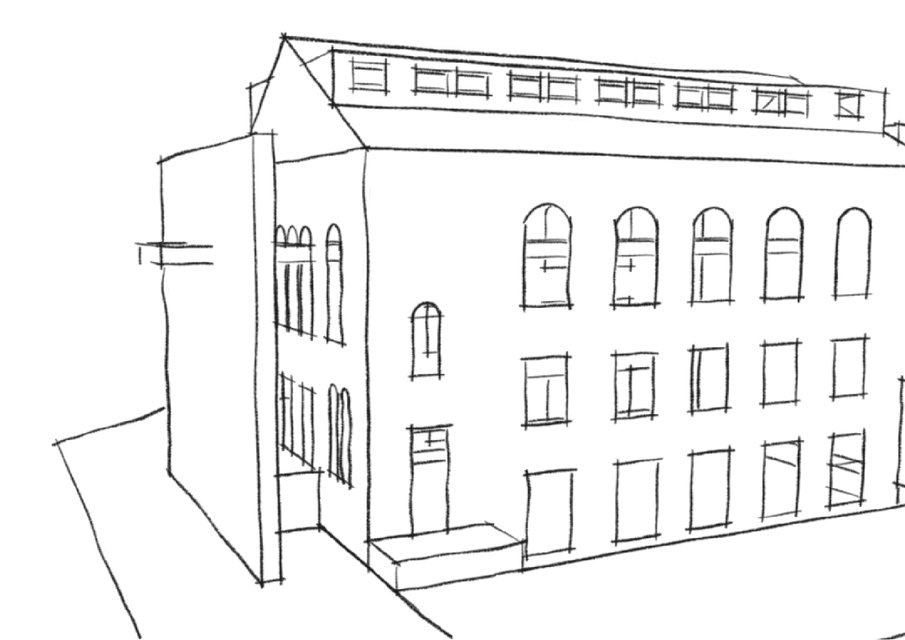
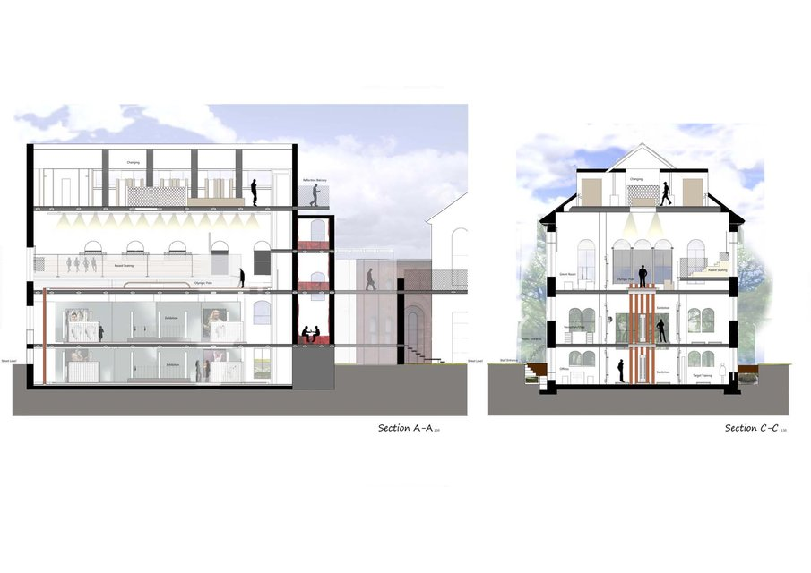
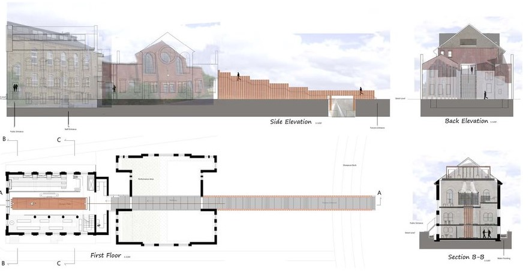

Touche, Fencing Club - Leeds
  My Role:
This was my final project for my first Degree in Interior Architecture and Design. It is a fencing club which has an Olympic Piste running through the third floor. The piste flowed outside where it traveled through a building (which would be used for open air performances) untill it reached the ground level and created an exterior enterance. This enterance was for fencers only with a seperate public access to the side of the building. There are copper pipes inspired by the materials used in Fencing which carried the noise of a fencing match down to the two lower floors. These floors were designed to be used for training aswell as an exhibition space for the public to view specific equipment used by fencing professionals.
See full project by clicking here.